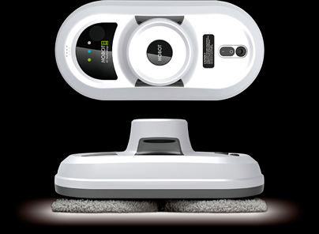

Робот-пылесос для мытья окон Hobot 188 White
Описание товара
Создавая новый робот Hobot-188>, инженеры поставили перед собой
цель, которая казалась невозможной: добиться снижения шума, улучшив прежние характеристики.
Для этого была переработана система выброса воздуха из вакуумного насоса и изменен
дизайн, чтобы новый Ноbot получился не только тише и эффективнее, но и красивее,
эргономичней. В результате был создан не просто новый робот. Это робот будущего.